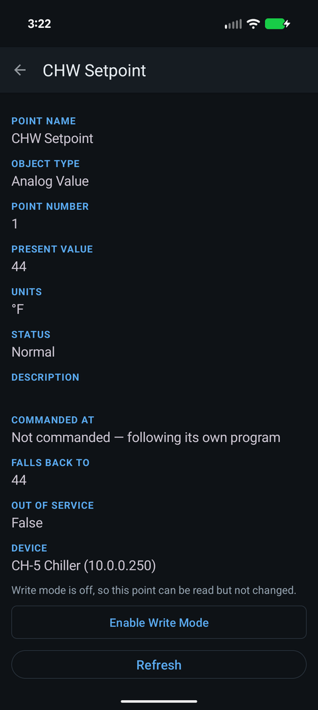
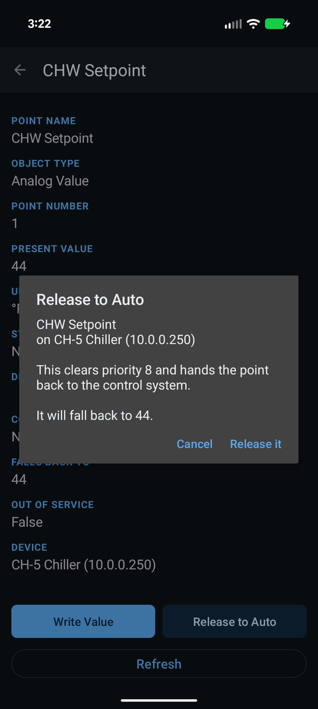

How do I release a BACnet override and give control back to automatic?
Updated 30 September 2026
To release a BACnet override you write NULL to the priority slot that is holding the point — you don't write a “normal” value back. Commanding a point parks a value in one of its 16 priority slots, and it stays there until that slot is cleared. In Easy BACnet, open the point and tap Release at the priority you used; the app writes NULL (relinquish) to that slot, and control falls to the next-highest slot — or to the relinquish default if none remain, which usually hands the point back to the automatic logic.


Why writing a value back doesn't work
A commandable BACnet point has a 16-slot priority array. When you command it, your value sits in a slot (slot 8 by default for manual operators). If you later write a different value at the same slot, you have only changed the override — the point is still overridden. To truly let go, you clear the slot by writing NULL. That is called relinquishing, or releasing. Only then does the point fall through to whatever is below: another operator's command at a lower priority, or the relinquish default — the value the object rests at when every slot is empty.
Release a point, step by step
- Open the point and look at its priority array. Easy BACnet shows which slots hold a value and highlights the one currently in command (“Commanded At”).
- Identify the slot you own. If you commanded it earlier, that is your slot — usually 8. If someone else's override is higher (a lower number), yours is not the one in control; see below.
- Tap Release at that priority. The app writes NULL to the slot (relinquish).
- Read it back. The slot should now be empty and the point should be commanded by the next-highest slot, or resting at its relinquish default.
Release the slot you commanded, not someone else's. If a point is held at priority 1 or 2 by the control system (life-safety, minimum on/off), clearing your priority-8 slot will not change the value, because a higher slot still wins. That is correct behaviour, not a bug.
“I released it but it didn't change”
- A higher slot still holds it. Something at a lower priority number is commanding. Check the whole array — you can only release what you put there.
- The point is Overridden or Out Of Service at the hardware. A physical hand/off/auto switch or an Out Of Service flag beats anything you write over the network. That's a controls or mechanical visit.
- The relinquish default is the value you're seeing. If the automatic value and your override value happen to match, releasing looks like nothing happened — but control has still returned to auto.
Good practice
If you commanded something to test it, release it before you leave — a slot left set is exactly how points get stuck in override for the next person. Easy BACnet also resets write mode to off on every launch, so you never leave the app armed by accident, but that does not clear a command you already sent to a device: only a release does that.